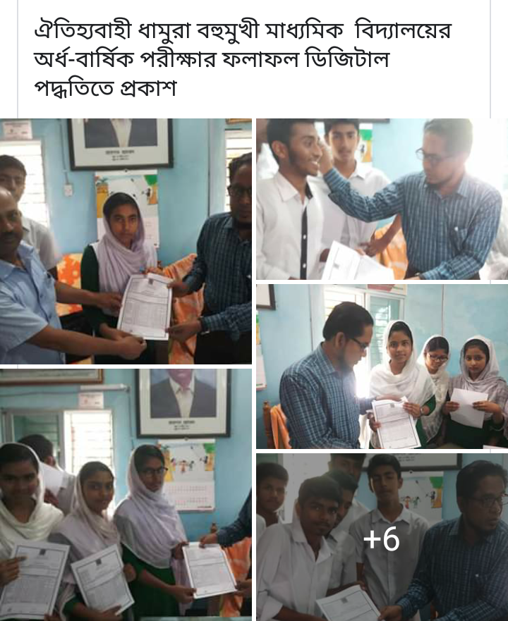
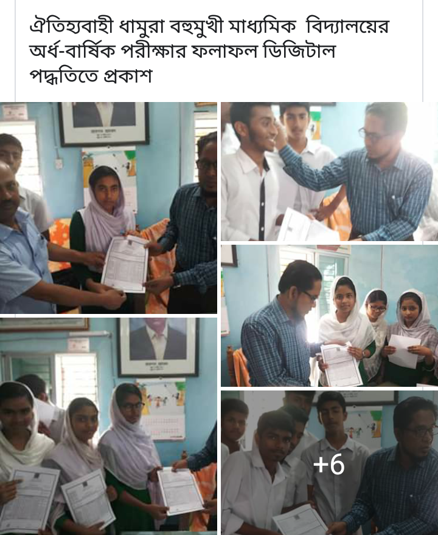
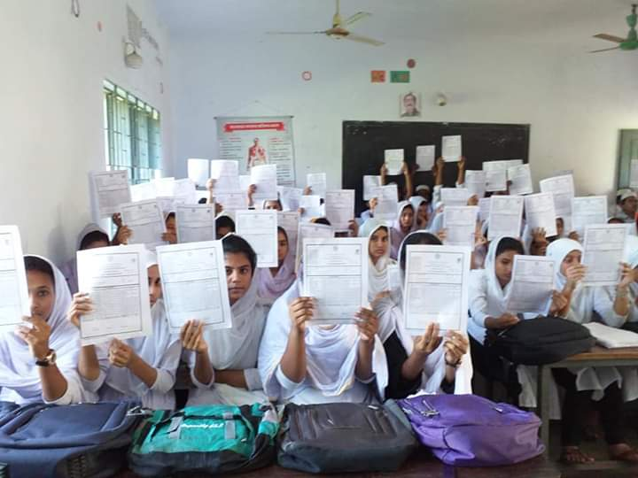
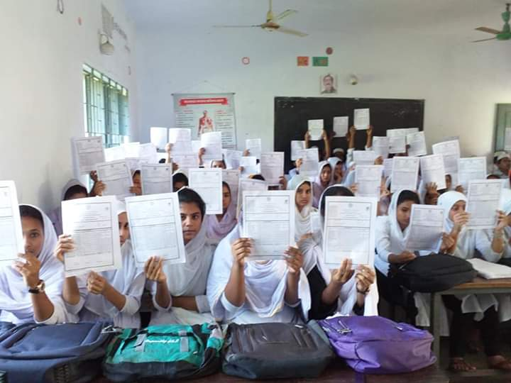

MTV -Model template view, MVC-Model View Controller
Node js , NPM
Ecma script 6 and above
Backend Django , Express js
Jinja template inheretence
Agile/Waterfall model
Joel test
Docker/Docker Image / Deployment
The DOM is a W3C (World Wide Web Consortium) standard.
Responsive web design makes your web page look good on all devices.
And many more..................
[SRP4]Reuse of greywater
Wastewater is any water that’s been used.
That could be by an individual, a business or an industrial process like farming or manufacturing.
However, this can be broken down further, depending on where the water comes from and what’s in it.
Two types of wastewater
First of all, wastewater can be broken down into two broad categories
sewage and non-sewage.
What is sewage?
Sewage is wastewater that comes from domestic activities.
That includes houses, public toilets, restaurants, schools, hotels and hospitals.
These buildings all produce a lot of wastewater on a daily basis, which generally contains urine and faeces.
What is non-sewage?
Non-sewage covers all other types of wastewater.
That includes rainwater and stormwater from flooding, water from commercial activity like garages or laundrettes and water from industrial plants.
Wastewater in your home
In a domestic sense – the kind we’re all most familiar with –
wastewater is split into three categories – black, grey and yellow.
What is blackwater?
Blackwater is wastewater that comes from your toilet, kitchen sink and dishwasher.
It contains all the contaminants you would expect from these appliances and fixtures.
Faeces, urine and toilet paper, bits of discarded food and plenty of cleaning liquids and chemicals are found in blackwater.
As a result, the water is highly contaminated and could potentially cause disease.
What is greywater?
In simple terms, greywater is blackwater without urine, faeces or food waste.
It comes from baths, bathroom sinks and washing machines (for clothes).
While it does contain chemicals and cleaning liquids, it’s much more suitable for re-use because it’s not pathogenic.
What is yellow water?
Finally, yellow water is essentially pure urine.
It’s urine from specific sources which doesn’t have any of the contaminants found in greywater or blackwater like chemicals, toilet paper
faeces and food particles.
[SRP1] Sohoz
Sohoz Exam management tool.
Users of Sohoz.Happy and delightful expression means a lot to us.
Trained camera with Ai , Open CV, Computer vision (python library) will detect flame and fire .
Instantly it send a signal to the microcontroller ,
and getting the signal from camera our device will automatically send
alarm, SMS, to fire station, start the water pump and deliver water to the fire .
Same functionalities like a household fire and flame detector.
The only change is replace the flame sensor with a long range trained camera .
Mounted on the top of a tower. long range trained camera will ensure more area coverage.
How it works :There are several options.
Option one:-
Mount the camera on a tower or we set a network of small cameras inside the bushes.
As the camera detect flame or fire it will send signal to us.
And we will send the signal to nearest fire station. In exchange we get a service charge from the government.
Option two:-Lets upgrade the forest fire protection department. Set up camera throughout the forest .
Set up a unit combined with a deep tube well , a pump house, with staff residential cabin, with water dispensing vehicle ,
this unit can cover the area within 30 kilometer radius. After every 50 KM one unit set up will be installed.
24h/365 d monitor with trained person with trained camera.
Fire department will build all infrastructures. We only provide technical support.
In exchange of a certain revenue, which must be value driven .
We can re use same python code with thousands of cameras.
But when we claim total bill, we count the total no of cameras each camera with fixed rate .
As this is a business model that’s why we are discussing it.
Option three:-
We can provide all support ,from tower installation and camera set up to pump house automation .
Field staff recruit ,training, as a package.
As a pilot project we will cover 10*10 =100 sq km areas under one pump house and camera surveillance unit.
After observing the result of the trial with demo fire set up. We will get the result instantly.
Then like copy and pest we spread the units throughout the whole forest.
Let’s dive deep in to the
proposed business model.
Who are our Key Partners?
The Government ,
The fire department,
The Investor finding agency,
The Investor,
Soft Ray-The Idea generator.
Who are our key suppliers?
One time supply:
Drilling equipment and tower installing unit of our company, Python programmers, Hardware suppliers :ie camera, Laptop, Raspbery PI,
Arduino, Batteries, IPS ,Other items.
Civil engineering firm for the construction of pump house with residence quarter.
Maintenance and supervision : Soft Ray and investor joint venture.
Which Key Resources are we
acquiring from partners?
The Investor finding agency or the investor will communicate with
The Government ,
The fire department.
Which Key Activities do
partners perform?
Get approval from the government. So that we can start our project.
MOTIVATIONS FOR PARTNERSHIPS:
Optimization and economy: Like Suez or Panama cannel , Save soil startup will be
One of its kind in this planet.
This will be a billion dollar project. Which will save billion dollars each year .
Which will be a milestone to the human civilization.
Stop spread of wild fire .
Protect the human civilization protect the top soil.
MOTIVATIONS FOR
PARTNERSHIPS:
Reduction of risk and uncertainty:
After finishing the set up of one unit pilot project we can practically be able to measure the risk benefit ratio.
Considering the huge potential this investment cost for the pilot unit ,risk is very trivial.
What Key Activities do our
Value Propositions require?
Ensure instant wild fire control.
Stop spreading wild fire.
Save human life, assets, Protect the damage of the top soil.
Thus ensure safety of our habitat.
The value is actually beyond the measure.
Customer Relationships?
Fire department and relevant govt
ministry will monitor and evaluate the cost expense ratio at the end of every year.
But at the end of our five years pilot project Govt. will make a decision regarding the future
of the project.
Revenue streams?
How much money we will receive as
service charge per annum from
the government?
It will be determined by us after one or two successful
trial.
The charge will be dynamic.
And value driven.
CATEGORIES:
Production : Design and develop the camera with AI.
Problem Solving: Detect Fire instantly and send different types of signals
to different departments.
Platform/Network: We already have infrastructure and humans with specific skill set and inter department relations.
What value do we deliver to the customer?
Wild fire , bush fire ,forest fire, or Amazon fire whatever may be the name. The inferno is the other name of panic ,destruction ,death and lose of wealth.
Eradication of forest fire through Save Soil Startup adds enormous value to the people who have been fighting against the bushfire from decades.
Which one of our customer’s problems are we helping to solve?
Destruction ,death and lose of wealth because of Wild fire will be erased
through Save Soil Startup. This will add enormous value to the people who have been fighting against the bushfire from decades.
What bundles of products and services are we offering to each Customer Segment?
Production : The tower equipped with multiple trained cameras with AI. Ensure 360 degree surveillance.
Problem Solving: Detect Fire instantly and send different types of signals to different departments.
[ phone calls, sms, alarm bell, alarm flash light.] Start water pump and shower water to the fire.
Platform/Network: We already have infrastructure and humans with specific skill set and inter department relations.
Which customer needs are we satisfying?
Controlling wild fire is the demand of
present time .
We are offering our service by which
this crying need can be satisfied.
CHARACTERISTICS:
Newness: The brand new idea.
Performance: Accurate .Reliable.
Customization: Optional, it can be customized.
“Getting the Job Done” : Prototype is ready with microcontroller. But train the camera with computer vision is under progress.
Design: Unique of its kind.
Brand/Status: We will make the branding of soil saver.
My main objective is the wellbeing of
the humanity. If any one is interested
he or they can use all information
Provided here for free of cost.
Only for non commercial intention.
It makes me feel sad when I
watch news regarding the destructions
due to wild fire.
Soft Ray
If any of your thought turns into reality then definitely YOU are a cocreator.
The beauty you see here is a reflection of your good thought.Thank You.
পৃথিবীর সব কিছুর পেছনেই অনেক জটিলতা আছে যা সব সময় বোঝা যায় না।
আমাদের কখনোই শুধুমাত্র উপরের তল দেখেই যাচাই করা উচিত না, অন্যকে না বুঝেই বিচার করে ফেলাটা বেশ বোকামি।
যারা খাবারের বিলটা সবসময়ই নিজে দিতে চায়, তার মানে এই নয় যে তার টাকা উপচে পড়ছে, এর কারন সে টাকার চেয়ে বন্ধুত্বকে বড় করে দেখে।
যারা আগে ভাগেই কাজ করে ফেলে, এর মানে সে বোকা না, আসলে তার দায়িত্বজ্ঞান রয়েছে।
যারা ঝগড়া বা বাকবিতন্ডার পরে আগে মাফ চেয়ে নেয়, সেই ভুল ছিলো এমনটা নয়, বরঞ্চ সে চারপাশের মানুষকে মূল্যায়ন করে।
তোমাকে যে সাহায্য করতে চায় সে তোমার কাছে কোন কিছু আশা করে না, বরং একজন প্রকৃত বন্ধু মনে করে।
কেউ আপনাকে প্রায়ই টেক্সট করে তার মানে এটা নয় যে তার কোন কাজ নেই, আসলে আপনাকে হৃদয় দিয়ে ভালোবাসে।
একদিন আমরা একে অপর থেকে বিচ্ছিন্ন হয়ে যাবো, কিন্তু আমাদের আচরণ ও ভালোবাসাগুলো মানুষের হৃদয়ে থেকে যাবে।
কেউ না কেউ স্মরণ করবে, “ এ হচ্ছে সেই মানুষ যার সাথে আমার জীবনের শ্রেষ্ঠ কিছু সময় কাটিয়েছি।”
ভারতের প্রাক্তন রাষ্ট্রপতি এবং বিশিষ্ট বিজ্ঞানী। আবুল পাকির জয়নুল আবেদিন আবদুল কালাম (১৫ অক্টোবৰ ১৯৩১ - ২৭ জুলাই ২০১৫) লেখা বই Wings of fire থেকে আমার ভাল লাগার কিছু বানী
আমি সুদর্শন ব্যক্তি নই। কিন্তু আমি আমার হাত তার জন্য বাড়িয়ে দিতে পারি যার সাহায্য প্রয়োজন। সৌন্দর্য মানুষের হৃদয়ে থাকে, মুখে বা বাইরে নয়।
আমরা প্রত্যেকেই ভেতরে ঐশ্বরিক আগুন নিয়ে জন্মায়। আমাদের চেষ্টা করা উচিত এই আগুনে ডানা যুক্ত করার এবং এর মঙ্গলময়তার আলোয় জগত পূর্ণ করা।
আকাশের দিকে তাকাও। আমরা একা নই। পুরো মহাবিশ্ব আমাদের প্রতি বন্ধুত্বসুলভ। যারা স্বপ্ন দেখে এবং কাজ করে শুধুমাত্র তাদেরকেই শ্রেষ্ঠটা দেওয়ার জন্য চক্রান্তে লিপ্ত এই বিশ্ব।
আপনার স্বপ্ন সত্যি করার আগে স্বপ্ন দেখতে হবে। ওটা স্বপ্ন নয় যেটা আপনি ঘুমিয়ে দেখেন, স্বপ্ন তা-ই যা আপনাকে ঘুমোতে দেয় না।
আমি আবিষ্কার করলাম সবচেয়ে দ্রুতগতিতে বেশী বিক্রি হয়ে যায় সিগারেট ও বিড়ি। অবাক হয়ে ভাবতাম, গরিব মানুষেরা তাদের কঠোর পরিশ্রমে উপার্জিত অর্থ এভাবে ধোঁয়া গিলে উড়িয়ে দেয় কেন?
যদি তুমি তোমার কাজকে স্যালুট কর, দেখো তোমায় আর কাউকে স্যালুট করতে হবে না। কিন্তু তুমি যদি তোমার কাজকে অসম্মান কর, অমর্যাদা কর, ফাঁকি দাও, তাহলে তোমায় সবাইকে স্যালুট করতে হবে।
আমরা শুধু সাফল্যের উপরেই গড়ি না, আমরা ব্যর্থতার উপরেও গড়ি।
কাউকে হারিয়ে দেয়াটা খুব সহজ, কিন্তু কঠিন হলো কারোর মন জয় করা।
ছাত্রদের মাঝে অনুসন্ধান, সৃজনশীলতা, উদ্যোক্তা এবং নৈতিক নেতৃত্বের সক্ষমতা তৈরি করা উচিত শিক্ষাবিদদের।
কেউ তার ভবিষ্যৎ বদলাতে পারে না, তবে অভ্যাস বদলাতে পারে। আর অবশ্যই অভ্যাস ভবিষ্যৎ বদলে দিতে পারে।
দ্রুত কিন্তু কৃত্রিম আনন্দের পেছনে না ছুটে বরং নিখাদ সাফল্য অর্জনের জন্য আরও বেশি নিবেদিত প্রাণ হও।
প্রতিদিন সকালে এই পাঁচটা লাইন বলো :১) আমি সেরা। ২) আমি করতে পারি ৩) সৃষ্টিকর্তা সব সময় আমার সঙ্গে আছে ৪) আমি জয়ী ৫) আজ দিনটা আমার
প্রথম বিজয়ের পর বসে থাকবেন না। কারণ দ্বিতীয়বার যখন আপনি ব্যর্থ হবেন তখন অনেকেই বলবেন প্রথমটিতে শুধুমাত্র ভাগ্যের জোরে সফল হয়েছিলেন তিনি।
প্রশংসা করতে হবে প্রকাশ্যে কিন্তু সমালোচনা ব্যক্তিগতভাবে।
বিজয়ী হওয়ার সর্বোত্তম পন্থা হচ্ছে বিজয়ী হওয়ার দরকার নেই মনে করা। তুমি যখন স্বাভাবিক আর সন্দেহমুক্ত থাকবে, তখনই তুমি ভালো ফলাফল করতে পারবে।
বৃষ্টির সময় প্রত্যেকটি পাখিই কোথাও না কোথাও আশ্রয় পায়। কিন্তু ঈগল মেঘের উপর দিয়ে উড়ে বৃষ্টিকে এড়িয়ে যায়।
ভিন্নভাবে চিন্তা করার ও উদ্ভাবনের সাহস থাকতে হবে, অপরিচিত পথে চলার ও অসম্ভব জিনিস আবিষ্কারের সাহস থাকতে হবে এবং সমস্যাকে জয় করে সফল হতে হবে। এ সকল মহানগুণের দ্বারা তরুণদের চালিত হতে হবে। তরুণ প্রজন্মের প্রতি এই আমার বার্তা।
যারা হৃদয় দিয়ে কাজ করতে পারে না; তাদের অর্জন অন্তঃসারশূন্য, উৎসাহহীন সাফল্য চারদিকে তিক্ততার উদ্ভব ঘটায়।
যে অন্যদের জানে সে শিক্ষিত, কিন্তু জ্ঞানী হল সেই ব্যক্তি যে নিজেকে জানে। জ্ঞান ছাড়া শিক্ষা কোন কাজে আসেনা।
সফলতার গল্পে কেবল একটি বার্তা থাকে। কিন্তু ব্যর্থতার গল্পে সফল হওয়ার উপায় থাকে।
সূর্যের মতো দীপ্তিমান হতে হলে প্রথমে তোমাকে সূর্যের মতোই পুড়তে হবে।
উৎকর্ষতা একটি চলমান প্রক্রিয়া এবং এটি কোনো আকস্মিক ঘটনা নয়।
একজন উদ্যমী ও একজন বিভ্রান্ত মানুষের মধ্যে পার্থক্য হচ্ছে, তাদের অভিজ্ঞতাকে তাদের মন যেভাবে ব্যবহার করে তার মধ্যে পার্থক্য।
[SRP2] Electricity generate using natural power like wave,tide etc. Reduced production cost method.
[SRP6]Reuse of plastic waste, Pyrolysis
Lets work together to reduce the pollution and try to ensure a safer habitat ...... Mother Earth for the humanity.
We use form submit.com to maintain email communications.Please fill in the form and leave a line to us.


 



 
